O que é o DFD Simulator
O DFD Simulator desenha diagramas de fluxo de dados e executa esses diagramas: você vê os dados percorrerem o sistema, formarem filas e serem gravados. [1] É um único arquivo HTML, que funciona no navegador, sem instalação nem conta.
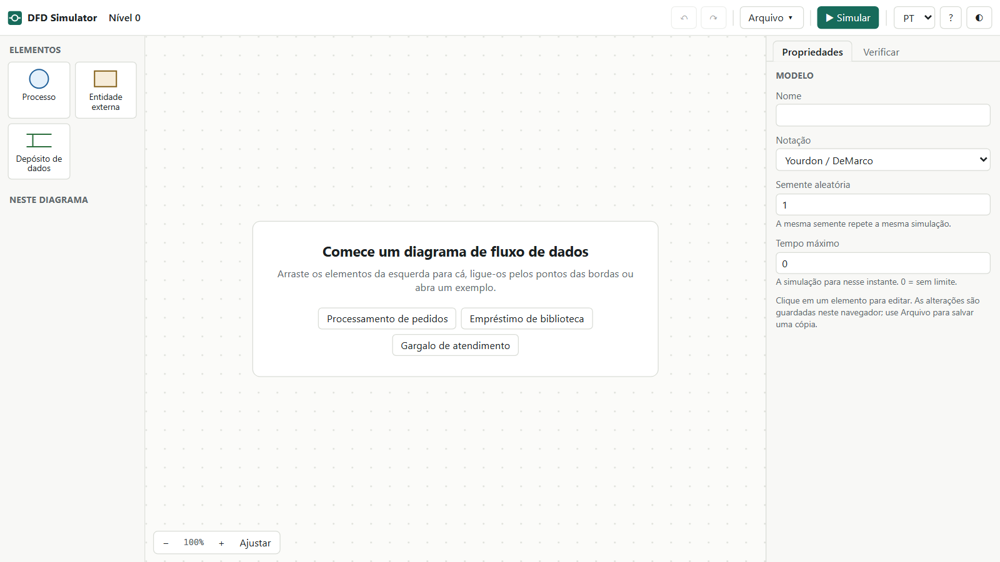
Um diagrama parado mostra a estrutura, mas não mostra o que acontece quando o sistema recebe trabalho. Simular responde a perguntas como: para onde vai um pedido recusado, qual processo forma fila e o que muda ao dobrar a capacidade.
Como o app trata os seus dados
- Nada sai do seu computador. O arquivo bloqueia conexões de rede.
- O modelo fica no navegador. Ele é guardado automaticamente e reaparece ao reabrir o app. Para ter uma cópia própria, salve em JSON.
- Modelos não executam código. As regras passam por um interpretador próprio, então abrir um modelo recebido de outra pessoa não roda JavaScript.
Os elementos de um DFD
Um DFD tem quatro elementos, e o app desenha cada um em duas notações. [3] [4] [5] Para a teoria, veja o tutorial de análise e projeto de sistemas. [2]
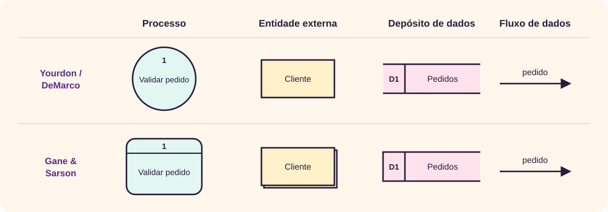
- Processo
- Transforma dados. Tem nome com verbo, como “Validar pedido”, e um número.
- Entidade externa
- Algo fora do sistema, que envia ou recebe dados: cliente, banco, outro sistema.
- Depósito de dados
- Onde os dados ficam guardados entre um processo e outro. Tem número com a letra D.
- Fluxo de dados
- O caminho de um dado. A seta indica o sentido e o nome diz o que passa.
Todo fluxo precisa ter um processo em uma das pontas. Por isso, o app recusa ligar duas entidades, dois depósitos ou uma entidade a um depósito.
Seu primeiro DFD: uma pizzaria
Em cerca de 15 minutos, você vai construir e simular uma pizzaria. O cliente faz um pedido, o sistema calcula o valor, grava o pedido e avisa a cozinha.
1. Crie os elementos
- Se o app abrir com outro modelo, use Arquivo ▾ → Novo modelo.
- Arraste da paleta para o diagrama: Entidade externa à esquerda, Processo no centro, Depósito de dados acima do processo e outra Entidade externa à direita.
- Dê um duplo clique em cada elemento e renomeie, confirmando com Enter:
Cliente,Registrar pedido,PedidoseCozinha.
2. Ligue os fluxos
Passe o mouse sobre um elemento: surgem pontos na borda. Arraste um ponto até o elemento de destino. O cursor vai para o campo Nome do novo fluxo; digite e pressione Tab.
ClienteparaRegistrar pedido:pedido.Registrar pedidoparaPedidos:pedido registrado.Registrar pedidoparaCozinha:comanda.
3. Descreva o comportamento
Clique em um elemento e preencha o painel Propriedades, à direita.
- Em
Cliente, preencha Dados gerados com as duas linhas abaixo, Emitir a cada com2e Limite de emissões com5.id = seq qty = randint(1, 3) - Em
Registrar pedido, preencha Regras com a linha abaixo. Cada pizza custa 40.total = qty * 40 - Clique no fluxo
comandae preencha Campos que passam comid, qty. A cozinha não precisa ver o valor.
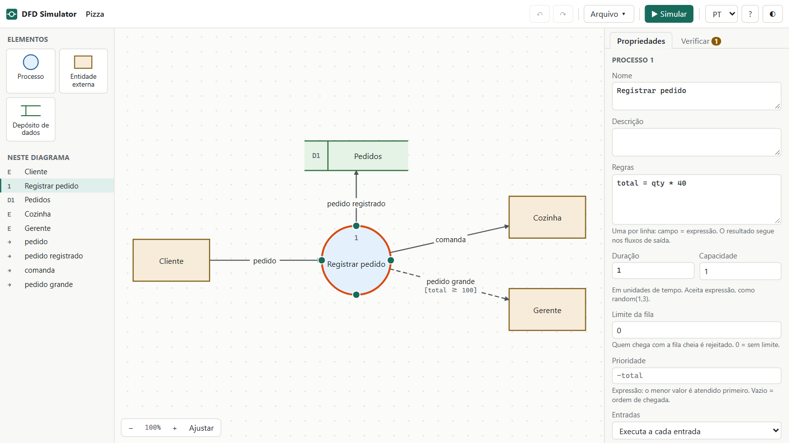
4. Verifique o modelo
Abra a aba Verificar. Ela mostra um alerta: o depósito Pedidos recebe dados, mas ninguém os lê. Alertas não impedem a simulação; o passo 7 resolve este.
5. Simule
- Clique em ▶ Simular. Os dados saem do cliente e percorrem os fluxos.
- Ao terminar, o status mostra Concluída: nada mais agendado, perto de t = 11.
- Abra a aba Depósitos, no painel de baixo.
Pedidostem 5 registros, comid,qtyetotal. - Clique em
Cozinha. Em Último dado recebido aparecem sóideqty: o fluxo filtrou os campos.
6. Acrescente uma decisão
- Clique em ■ Editar para voltar ao desenho.
- Crie a entidade
Gerentee ligueRegistrar pedidoa ela com o fluxopedido grande. - Nesse fluxo, preencha Condição com
total >= 100. A linha fica tracejada, o que indica um fluxo condicional. - Simule de novo.
Gerenterecebe 2 dos 5 pedidos, os de valor 120. Com a mesma semente, os valores se repetem.
7. Leia o depósito e resolva o alerta
- Volte a editar e crie a entidade
Caixae o processoConsultar pedido. - Crie três fluxos:
CaixaparaConsultar pedido(consulta),PedidosparaConsultar pedido(dados do pedido) eConsultar pedidoparaCaixa(pedido consultado). - Em
Caixa, preencha Dados gerados comid = randint(1, 5)e deixe Emitir a cada em0. - No fluxo
dados do pedido, preencha Filtro de leitura comid == in.ide Nome nas regras comorder. - Em
Consultar pedido, preencha Regras comfound = exists(order). A aba Verificar agora mostra Nenhum problema encontrado. - Simule. Depois de Concluída, clique em
Caixa: ela emite uma consulta, e Último dado recebido trazfound: true.
Você usou emissão automática e manual, regras, condição, filtro de campos, gravação e leitura. O restante do tutorial detalha cada recurso.
A interface
A tela tem uma barra superior e três colunas: elementos à esquerda, diagrama no centro e propriedades à direita. Durante a simulação, surge um painel de resultados abaixo do diagrama.
- Barra superior
- Caminho dos níveis, desfazer e refazer, menu Arquivo ▾, ▶ Simular, idioma, ajuda e tema.
- Elementos
- A paleta. Arraste para o diagrama, ou clique para colocar no centro da vista.
- Neste diagrama
- Lista dos elementos e fluxos do nível aberto. Clicar seleciona o item.
- Propriedades
- Campos do item selecionado. Sem seleção, mostra Nome, Notação, Semente aleatória e Tempo máximo do modelo.
- Verificar
- Problemas do modelo. Clicar em um deles leva ao elemento.
Desenhar e organizar
| Para | Faça |
|---|---|
| Criar um elemento | Arraste da paleta ou clique nela. |
| Renomear | Duplo clique. Enter confirma e Esc cancela. |
| Criar um fluxo | Arraste um ponto da borda até o destino. |
| Curvar um fluxo | Selecione o fluxo e arraste o ponto no meio dele. Endireitar desfaz. |
| Trocar as pontas de um fluxo | Use os campos De e Para, ou Inverter sentido. |
| Mover | Arraste, com encaixe em uma grade de 8 pontos. Segure Alt para mover livremente. |
| Selecionar vários | Arraste no fundo, ou clique com Shift. |
| Mover a vista | Botão do meio, ou Espaço + arrastar. |
| Aproximar | Roda do mouse. Ajustar enquadra o diagrama todo. |
| Trocar a notação | Sem nada selecionado, use o campo Notação. |
Dois fluxos entre os mesmos elementos se curvam sozinhos para não ficarem sobrepostos.
Propriedades de cada elemento
Processo
- Regras
- Calculam campos do dado. Veja a próxima seção.
- Duração
- Quanto tempo o processo leva. Aceita expressão, como
random(1, 3). - Capacidade
- Quantos dados atende ao mesmo tempo. O excedente espera na fila.
- Limite da fila
- Quantos dados podem esperar. Quem chega com a fila cheia é rejeitado.
0é sem limite. - Prioridade
- Expressão que escolhe o próximo da fila: o menor valor vai primeiro. Vazio segue a ordem de chegada.
- Entradas
- Executa a cada entrada atende cada dado que chega. Espera todas as entradas aguarda um dado de cada fluxo e combina os campos.
- Intervalo automático
- Para processos sem fluxo de dados de entrada: ele dispara sozinho nesse intervalo. Se lê depósitos, só dispara quando há registro, e o registro lido vira o dado.
- Pausar a simulação aqui
- Ponto de parada: pausa quando um dado chega. Só quando limita a uma condição, como
total > 100. Depósitos e entidades também têm.
Entidade externa
- Dados gerados
- Os campos de cada emissão.
seqé o número da emissão. - Emitir a cada
- Intervalo entre emissões. Aceita expressão:
exponential(2)gera chegadas irregulares, com média de 2. Com0, a entidade só emite ao receber um clique durante a simulação. - Limite de emissões
- Total de emissões automáticas.
0é sem limite, e aí a simulação só para quando você pausar. - Primeira emissão em
- Instante da primeira emissão automática.
Depósito de dados
- Campo-chave
- Identifica o registro em atualizações e exclusões.
- Registros iniciais (JSON)
- Lista de objetos carregada no início, como
[{"id": 1, "stock": 10}].
Fluxo de dados
Os campos mudam conforme a origem e o destino do fluxo.
| Campo | Aparece em | Função |
|---|---|---|
| Condição | Fluxos que não leem depósito | O dado só passa se for verdadeira. Vazio é sempre; else vale quando nenhuma outra condição do processo for verdadeira. |
| Campos que passam | Fluxos que não leem depósito | Lista separada por vírgulas. Vazio passa todos. |
| Operação de gravação | Fluxos para depósito | Inserir, Inserir ou atualizar pela chave ou Excluir pela chave. |
| Filtro de leitura | Fluxos vindos de depósito | Escolhe o registro. id == in.id compara o campo do registro com o dado de entrada. Vazio pega o primeiro. |
| Nome nas regras | Fluxos vindos de depósito | Como as regras chamam o registro lido. Vazio usa o nome do depósito em minúsculas e sem acentos. |
| Ler todos os registros | Fluxos vindos de depósito | O Nome nas regras vira uma lista com todos os registros que atendem ao filtro, para usar com count, sum e avg. |
| Remover o registro ao ler | Fluxos vindos de depósito | Faz o depósito funcionar como uma fila de trabalho. |
| Tempo de trânsito | Todos | Quanto o dado leva para percorrer o fluxo. |
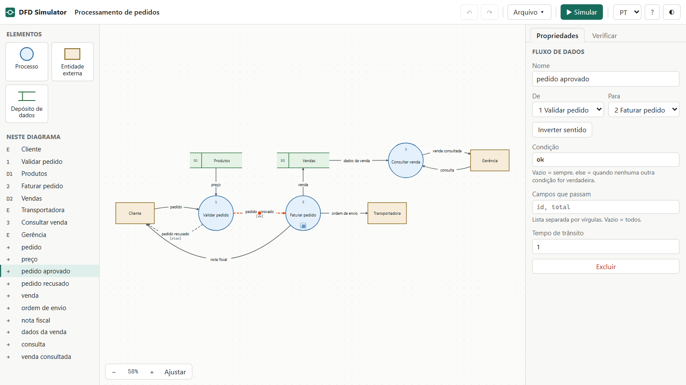
Se mais de uma condição for verdadeira, cada fluxo recebe uma cópia do dado. Se nenhuma for verdadeira e não houver else, o dado é descartado e o registro mostra o motivo.
Regras e expressões
Regras têm uma atribuição por linha, no formato campo = expressão, e são aplicadas em ordem: uma linha pode usar o resultado da anterior. Linhas iniciadas com # ou // são comentários.
# preço vem do depósito lido
price = products.price
total = round(qty * price, 2)
ok = exists(products) && products.stock >= qty| Tipo | Disponível |
|---|---|
| Aritmética | + - * / %. + concatena se um dos lados for texto. |
| Comparação | == != < <= > >= |
| Lógica | && || ! ou and or not, e condição ? a : b |
| Números | round(x, casas), floor, ceil, abs, min, max, num |
| Aleatórios | random(a, b) decimal, randint(a, b) inteiro, exponential(média), normal(média, desvio), chance(p) e pick(a, b, c) |
| Listas | count(l), sum(l, "campo"), avg, minof e maxof, para leituras de todos os registros |
| Texto | len, upper, lower, concat, contains, str |
| Outros | exists(x), coalesce(a, b), if(condição, a, b) |
| Onde | O que a expressão enxerga |
|---|---|
| Dados gerados | seq, t e os campos das linhas anteriores |
| Regras e duração | Campos do dado, registros lidos pelo Nome nas regras e t |
| Condição | Campos do dado que sai do processo e t |
| Filtro de leitura | Campos do registro, in.campo e t |
Campo inexistente vale null, e ler um campo de null também dá null. Divisão por zero dá null. Quando a leitura não encontra registro, o nome dele vale null; por isso use exists.
Níveis e subdiagramas
Um processo complexo pode ser detalhado em outro diagrama, com numeração hierárquica: o processo 2 se abre em 2.1, 2.2 e assim por diante.
- Selecione o processo e clique em Detalhar em subdiagrama.
- Os fluxos do processo pai aparecem como elementos tracejados: à esquerda as entradas e à direita as saídas.
- Crie os processos internos e ligue-os a esses elementos.
Os níveis ficam balanceados porque os elementos tracejados vêm do pai. Um fluxo criado no pai surge no subdiagrama; um fluxo excluído no pai some, junto com as ligações. Para mudar o nome, edite o fluxo no pai.
- Com subdiagrama, o processo pai perde regras e duração: a lógica passa a ser a dos processos internos.
- O marcador ⊞ no processo abre o subdiagrama.
- Remover subdiagrama apaga o nível e os que estiverem abaixo dele. Ctrl+Z desfaz.
Na simulação, o dado entra pelo elemento tracejado, passa pelos processos internos e sai pelo fluxo correspondente do pai. Ao ver o nível superior, um número azul no processo indica quantos dados estão dentro dele.
Verificar o modelo
A aba Verificar revisa o modelo inteiro, em todos os níveis, e o número nela mostra quantos problemas há. Só erros de ligação proibida, expressão e JSON impedem a simulação.
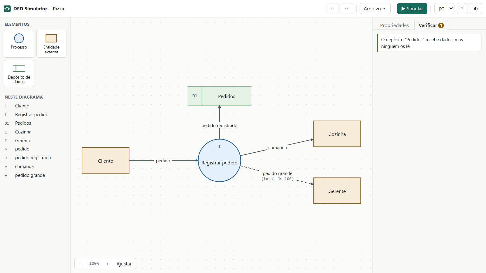
| Problema | O que significa | Impede simular |
|---|---|---|
| Ligação proibida | Fluxo sem processo em uma das pontas. | Sim |
| Expressão inválida | Erro de sintaxe, ou função que não existe. | Sim |
| Registros iniciais inválidos | O texto não é uma lista JSON de objetos. | Sim |
| Milagre | Processo sem entradas: produz dados do nada. | Não |
| Buraco negro | Processo sem saídas: os dados somem nele. | Não |
| Depósito só gravado ou só lido | Ninguém lê o que entra, ou nada grava o que é lido. | Não |
| Elemento isolado | Não está ligado a nada. | Não |
| Sem nome | Elemento ou fluxo sem nome. Fluxos de depósito e de subdiagrama podem ficar sem nome. | Não |
| Balanceamento | Fluxo do nível superior sem ligação no subdiagrama. | Não |
| Falta campo-chave | Atualização ou exclusão em depósito sem chave. | Não |
Simular
▶ Simular executa uma cópia do modelo, em tempo simulado. Cada dado segue o ciclo abaixo:
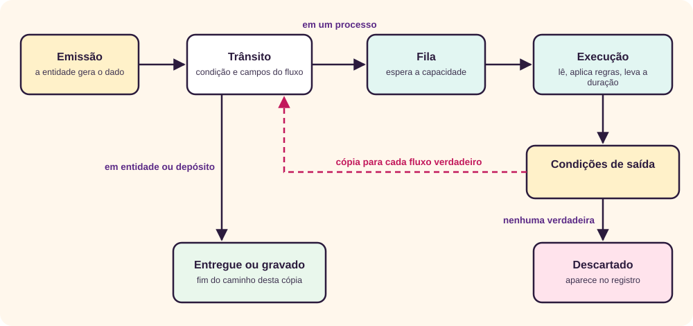
Controles
| Controle | Tecla | Função |
|---|---|---|
| ▶ Executar / ⏸ Pausar | Espaço | Inicia ou pausa o relógio. |
| Voltar | B | Desfaz o último evento. Dá para voltar e avançar quantas vezes quiser. |
| Linha do tempo | A barra acima das abas leva a qualquer instante já simulado. Se você executar a partir dali, o trecho seguinte é refeito. | |
| Passo | N | Avança até o próximo evento, para ver o que acontece em cada um. |
| Reiniciar | R | Recomeça do zero, com a mesma semente. |
| Velocidade | De 0,25× a 8×. Não muda os resultados. | |
| ■ Editar | Esc | Volta ao desenho e descarta a simulação. |
O desenho fica bloqueado durante a simulação. Ainda é possível abrir subdiagramas e mover a vista, arrastando o fundo.
O que aparece no diagrama
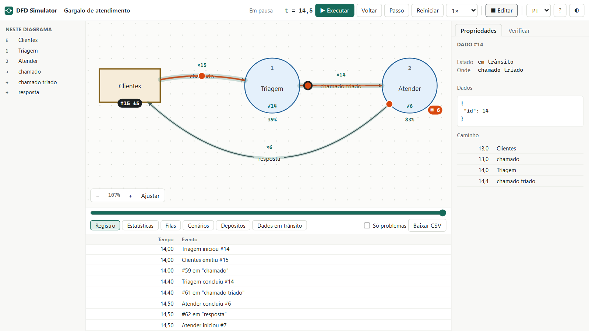
| Sinal | Significado |
|---|---|
| Círculo laranja no fluxo | Um dado em trânsito. Clique para ver os campos e o caminho percorrido, que fica destacado no diagrama. |
| Círculo verde no fluxo | Uma leitura de depósito. |
| Arco em volta do processo | Progresso da execução. |
▤ 3 | Dados na fila do processo. |
⋈ 1 | Dados esperando as outras entradas. |
✓8 | Execuções concluídas. |
2/3 | Atendimentos em andamento e capacidade. |
↑5 ↓2 | Emitidos e recebidos pela entidade. |
| Número no canto do depósito | Registros guardados. |
×4 | Dados que já passaram pelo fluxo. |
| Faixa larga no fluxo | Volume relativo: quanto mais larga, mais dados passaram. |
94% | Ocupação do processo até agora. |
✕ 2 | Dados rejeitados por fila cheia. |
Emitir e pausar
- Entidade sem intervalo emite ao receber um clique. Em qualquer entidade, o botão Emitir agora das propriedades funciona.
- Marque Pausar a simulação aqui em um elemento para parar quando um dado chegar a ele. O status mostra onde parou.
- A simulação termina sozinha quando não há mais nada agendado.
Semente aleatória
random e randint seguem a Semente aleatória do modelo. Com a mesma semente, o resultado se repete, o que permite comparar cenários mudando uma coisa de cada vez. Troque a semente para ver outra sequência.
Cada elemento tem a sua própria sequência de sorteios, definida pela posição dele no diagrama. Assim, mudar a capacidade de um processo não altera as chegadas nem as durações dos outros.
Ler os resultados
O painel abaixo do diagrama tem seis abas, e cada uma responde a uma pergunta.
- Registro
- O que aconteceu e quando. Só problemas filtra descartes e erros, e Baixar CSV exporta. Clicar em uma linha leva ao elemento.
- Estatísticas
- Como o sistema se saiu e onde está o gargalo.
- Filas
- Como cada fila cresceu e diminuiu ao longo do tempo, em gráfico ou tabela.
- Cenários
- Quanto o resultado varia entre rodadas e o que mudou em relação a uma referência.
- Depósitos
- O que ficou gravado, em tabelas com até 200 registros cada.
- Dados em trânsito
- Onde está cada dado agora.
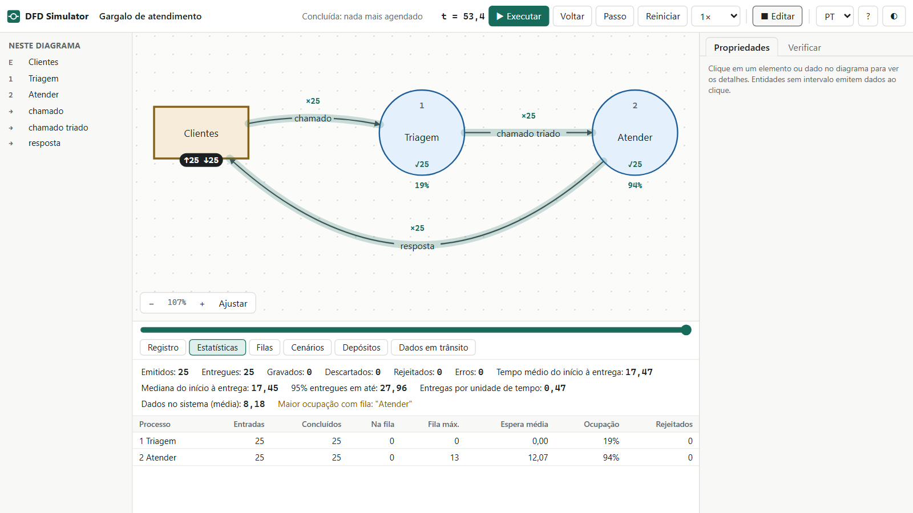
- Emitidos
- Dados que entraram no sistema.
- Entregues e Gravados
- Chegadas a entidades e gravações em depósitos. Um dado pode gerar várias, porque cada fluxo recebe uma cópia.
- Descartados
- Dados sem condição verdadeira, ou parados em processo sem saída ou fluxo sem ligação no subdiagrama. O ideal é zero, salvo se for intencional.
- Rejeitados
- Dados recusados porque a fila estava cheia.
- Tempo médio do início à entrega
- Da emissão até a chegada a uma entidade.
- Mediana e 95% entregues em até
- Metade das entregas leva até a mediana, e 95% levam até o segundo valor. Mostram o que a média esconde.
- Dados no sistema (média)
- Quantos dados, em média, estavam circulando ou esperando.
- Entregas por unidade de tempo
- Total de entregas dividido pelo instante da última entrega.
- Fila máx. e Espera média
- Maior fila formada e tempo médio na fila.
- Ocupação
- Parte do tempo em que a capacidade esteve em uso.
Quando há fila, o resumo aponta o processo de maior ocupação entre os que formaram fila. É o primeiro candidato a gargalo.
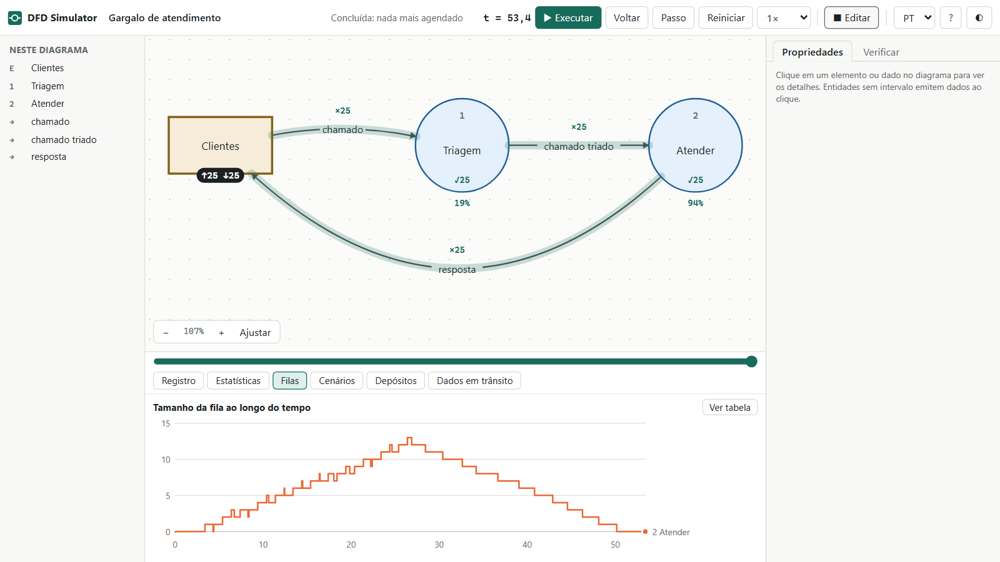
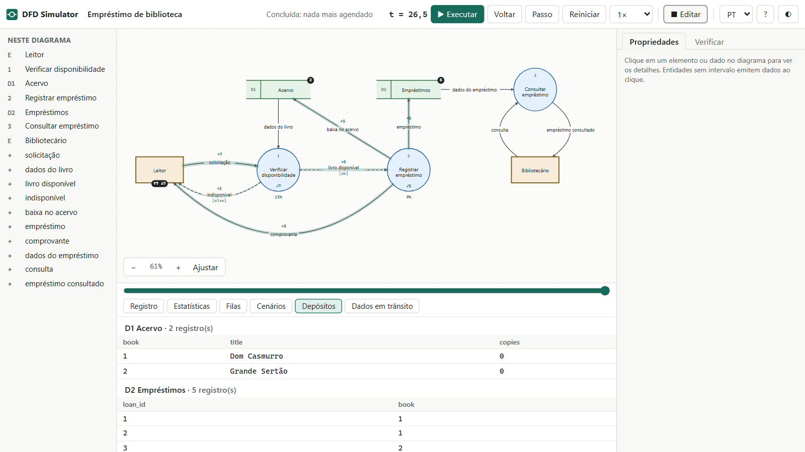
Experimentos com os exemplos
Os três exemplos ficam em Arquivo ▾ e na tela inicial. Estes experimentos usam a semente 1, que é a padrão.
Encontrar um gargalo
Abra Gargalo de atendimento e simule: chega um chamado a cada 1 unidade de tempo, mas atender leva cerca de 2. A aba Filas mostra a fila subindo até 13. Uma rodada, porém, é só um sorteio. Para saber o que é regra e o que é acaso, repita.
- Abra a aba Cenários, deixe Rodadas em
30e clique em Repetir com outras sementes. - Clique em Guardar como referência.
- Clique em ■ Editar, selecione
Atender, mude Capacidade para2e clique em ▶ Simular. - Na aba Cenários, clique em Repetir com outras sementes de novo. A tabela compara os dois cenários.
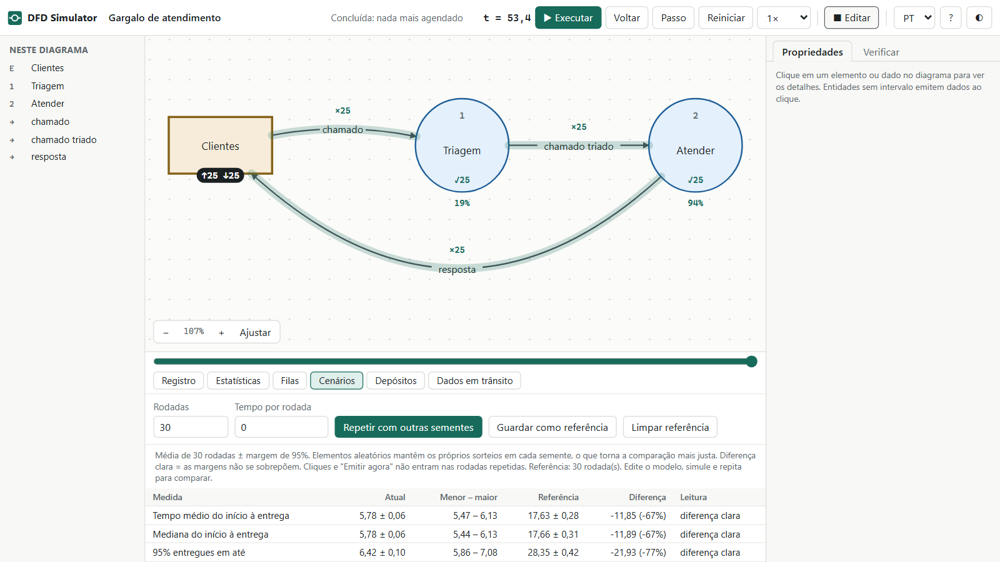
| Média de 30 rodadas ± margem | Capacidade 1 | Capacidade 2 |
|---|---|---|
| Fila máxima em “Atender” | 12,7 ± 0,2 | 1,5 ± 0,2 |
| Espera média em “Atender” | 12,23 ± 0,26 | 0,37 ± 0,05 |
| Ocupação de “Atender” | 94% | 84% |
| Tempo médio do início à entrega | 17,63 ± 0,28 | 5,78 ± 0,06 |
| 95% entregues em até | 28,35 ± 0,42 | 6,42 ± 0,10 |
| Fim da simulação | t ≈ 54 | t ≈ 30 |
Dobrar a capacidade do gargalo reduziu a espera média de 12,23 para 0,37, e a coluna Leitura marca diferença clara, porque as margens não se sobrepõem. Quando elas se sobrepõem, a leitura é dentro da variação: o resultado não mostra que um cenário é melhor. Mudar a capacidade de Triagem não teria esse efeito, porque ela não forma fila.
Provocar uma atualização perdida
Abra Empréstimo de biblioteca. Com Emitir a cada em 4, são 5 empréstimos e o acervo cai de 5 exemplares para 0. Agora mude o valor em Leitor para 2 e simule: são 6 empréstimos de um acervo de apenas 5 exemplares.
A causa está nos tempos: uma solicitação lê o acervo antes de a anterior gravar a baixa. É uma atualização perdida, um problema clássico de concorrência. [6] O simulador não corrige isso; ele torna o problema visível.
Acompanhar um pedido por dois níveis
Abra Processamento de pedidos e simule: dos 8 pedidos, 7 são aprovados. Pausar e abrir Faturar pedido mostra os dados nos processos 2.1 e 2.2. Depois, em Gerência, use Emitir agora para consultar uma venda gravada.
Salvar, abrir e exportar
| Opção de Arquivo ▾ | O que faz |
|---|---|
| Novo modelo | Começa um modelo vazio, depois de pedir confirmação. |
| Abrir modelo (.json)… | Carrega um modelo salvo. Também aceita arrastar o arquivo para a janela. |
| Salvar modelo (.json) | Baixa o modelo, com todos os níveis. Atalho: Ctrl+S. |
| Exportar diagrama (SVG) ou (PNG) | Baixa a imagem do nível aberto, em fundo branco. |
| Imprimir diagrama | Abre a impressão do nível aberto. |
Atalhos de teclado
| Onde | Tecla | Ação |
|---|---|---|
| Edição | Ctrl+Z / Ctrl+Y | Desfazer e refazer |
| Edição | Ctrl+C / X / V / D | Copiar, recortar, colar e duplicar |
| Edição | Ctrl+A | Selecionar todos os elementos |
| Edição | Del | Excluir a seleção |
| Edição | Setas (com Shift, passo maior) | Mover a seleção |
| Edição | Ctrl+S | Salvar o modelo |
| Edição | ? ou F1 | Abrir a ajuda |
| Edição e simulação | F | Ajustar a vista |
| Simulação | Espaço | Executar ou pausar |
| Simulação | N | Avançar um evento |
| Simulação | B | Voltar um evento |
| Simulação | R | Reiniciar |
| Simulação | Esc | Voltar a editar |
Limitações e solução de problemas
Limitações
- Tempo sem unidade: uma unidade de tempo pode ser um segundo ou um dia, desde que todo o modelo use a mesma.
- Margem de erro: a margem de 95% é uma aproximação, que supõe rodadas independentes. Use pelo menos 30 rodadas antes de tirar conclusões.
- Depósitos sem transação: cada gravação é imediata, e duas leituras simultâneas enxergam o mesmo valor.
- Copiar e colar: subdiagramas não são copiados.
- Navegadores: o app foi testado no Chromium. O uso em outros navegadores e em celular não foi testado.
Problemas comuns
| Sintoma | Causa provável | O que fazer |
|---|---|---|
| Simular não inicia | Há um erro que impede a execução. | Abra Verificar e corrija os erros de ligação, expressão ou JSON. |
| Nada acontece ao simular | Nenhuma entidade tem intervalo. | Clique em uma entidade, ou preencha Emitir a cada. |
| A simulação nunca termina | Limite de emissões está em 0. | Defina um limite, preencha Tempo máximo no modelo ou pause quando quiser. |
| Dados descartados | Nenhuma condição de saída foi verdadeira. | Veja Só problemas e acrescente um fluxo com else. |
| Campo sempre vazio | Campos que passam filtrou o campo em um fluxo anterior, ou o nome está diferente. | Clique em um dado em trânsito e confira os campos. |
| Condição usando o registro lido não funciona | Condições não enxergam registros lidos. | Grave o valor em um campo nas regras. |
| A leitura nunca encontra registro | O filtro não usa in., ou nada foi gravado antes da leitura. | Revise o filtro, como id == in.id, e olhe a aba Depósitos. |
| Atualizar ou excluir não muda o depósito | O depósito não tem Campo-chave, ou o dado não traz esse campo. | Preencha a chave e confira Campos que passam. |
| Dados param em um processo com subdiagrama | O fluxo do pai não está ligado no subdiagrama. | Ligue o elemento tracejado a um processo interno. |
Revisão rápida
Tente responder antes de abrir cada pergunta.
1. Por que o app recusa ligar um cliente direto a um depósito?
Porque todo fluxo precisa ter um processo em uma das pontas. Quem transforma e grava os dados é o processo.
2. Duas condições de saída são verdadeiras. O que acontece?
Cada fluxo recebe uma cópia do dado. Um fluxo com else só é usado quando nenhuma outra é verdadeira.
3. O que “Espera todas as entradas” faz?
Aguarda um dado de cada fluxo de entrada e combina os campos em um só antes de executar.
4. Como usar um registro lido em uma condição?
Grave o valor em um campo nas regras, como ok = exists(products), e use ok na condição.
5. Um fluxo foi criado no processo pai. O que muda no subdiagrama?
Surge um elemento tracejado com esse fluxo, e a aba Verificar aponta o balanceamento até ele ser ligado.
6. Por que a simulação repete os mesmos valores aleatórios?
Porque usa a mesma Semente aleatória. Isso permite comparar cenários; troque a semente para ver outra sequência.
Referências
- Giovani Perotto Mesquita, “DFD Simulator”, aplicativo em um único arquivo HTML, giovanipm.github.io/dfd-simulator.html.
- Giovani Perotto Mesquita, “Análise e projeto de sistemas”, tutorial deste site, giovanipm.github.io/AnaliseProjetoSistemas.html.
- Wikipedia (em inglês), “Data-flow diagram”, acesso em 30/10/2026, en.wikipedia.org/wiki/Data-flow_diagram.
- Tom DeMarco, Structured Analysis and System Specification, livro, Prentice-Hall, 1979, ISBN 978-0-13-854380-8.
- Chris Gane, Trish Sarson, Structured Systems Analysis: Tools and Techniques, livro, Prentice-Hall, 1979, ISBN 978-0-13-854547-5.
- Wikipedia (em inglês), “Concurrency control”, acesso em 30/10/2026, en.wikipedia.org/wiki/Concurrency_control.